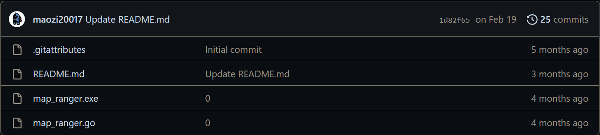

Department of Computer Science and Information Engineering National Taitung University
以虛實整合技術探討原民文化響應學習研究
依照網路上的教學寫出來後再修改而成的網頁。
一個簡單的註冊登入系統，用gin（網頁開發框架的package）處理連線的部分，有連接mysql並用gorm（物件關係對映處理的package），用來儲存註冊的帳號。
目前有3個身分組（一般使用者、版主、管理員），帳號資訊跟身分組放在不同table並用外鍵連接，在登入後會用session儲存帳號資訊，只有管理員才可使用後台管理功能。
目前後台管理只有顯示所有帳號資訊的功能。
有打算嘗試RESTful但失敗了，教學的太過複雜難以理解且目前用不到那麼多功能。
解釋：在我玩的遊戲中有一個小地圖，在遊戲中我需要測量我與敵人的距離，所以就寫了這個程式。
運作原理：先測量當前地圖一格的長度，輸入當前地圖的比例尺以算出一格長度是多少像素，然後在地圖起點（自己）和敵人的標記按下滑鼠中鍵測量出兩點距離多少像素，最後就可以得出距離。
但因為從設定初始長度到測量都是人工操作（用兩點鼠標計算距離），所以會有一定的誤差，距離不是十分準確。
原本是打算用圖像辨識來讓測距自動化，但遊戲本身的設計會讓要辨識的物件閃爍導致辨識難度增加，因此還是以人工操作為主。
這是我github上的第一個項目，當時還不知道go mod init這個指令所以沒有go.mod跟go.sum。
刷leetcode留下的紀錄，有程式碼以及題目連結，目前86題。
個人履歷，也就是現在看到的這些，使用html和css完成，用github page發布。
如圖所示，目前只有用xml寫別人模組的漢化包，主要做的是把各個翻譯者的漢化包做個統整。
smallg20017@gmail.com